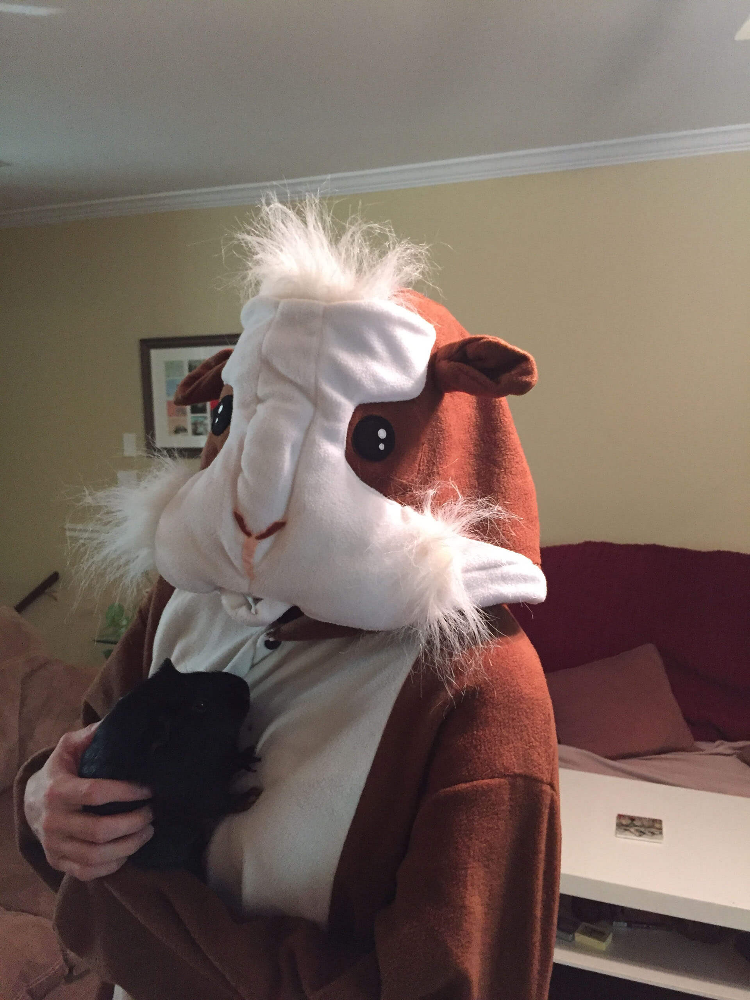

Rodents
A lot of people think this is weird but I'm obsessed with rodents. I wish my spirit animal was a squirrel. However they are way too graceful to fit me. If I ever need to smile I always google Squirrel Images I do have a Guinea Pig named Freddie. He's three pounds of solid muscle. For Halloween two years ago I got a Guinea Pig custome, Freddie wasn't thrilled with all the pictures.
Swimming
Swimming has always been a big part of my life. I started swimming when I was 8 and swam competitively through college. Unfortunately it is the only sport I can do. I'm a disastor moving on land. My events were the 200 Fly 100 Fly and 400 IM. It made for some really fun enjoyable training days, where I developed an unhealthy hatred for sprinters.
Dreams
One of my passions is reading. This past year I started researching how much reading impacts our society socially and economically. The nonprofit that caught my eye was Pajama Program It's a great organization that gives a book and pair of pajamas to kids in need. In 2015 They hit their goal of reaching over 1 million children.